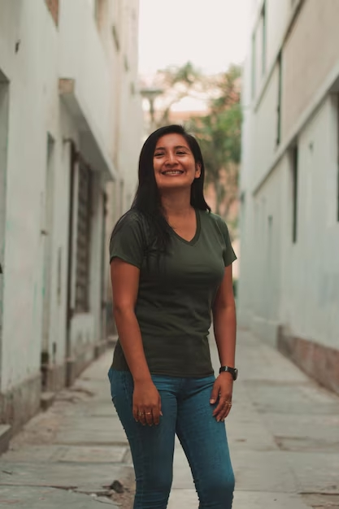
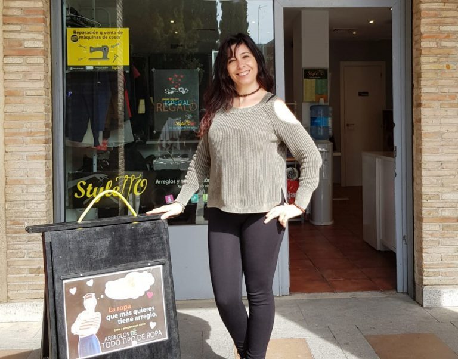
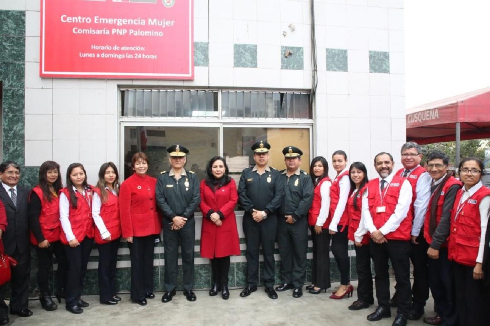
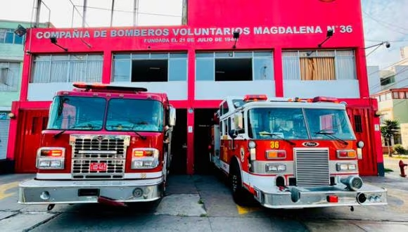
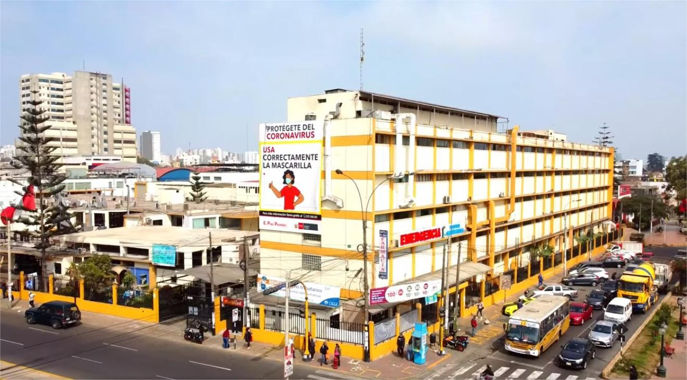

Años de residencia: Ha vivido en el vecindario por más de 15 años.
Elección: Elegido como presidente en marzo de 2023, con un mandato de dos años.
Motivación: Juan Manuel se ha comprometido a fortalecer la comunicación entre los vecinos y mejorar la
seguridad, infraestructura y el acceso a espacios recreativos en la comunidad.
Contacto y Redes Sociales
Correo electrónico: contacto@vecindariojuanmt.com
Número de teléfono: +51 987 654 321 (disponible para emergencias y temas urgentes)
Facebook: @VecindarioJuanMT
Instagram: @VecindarioJuanMT
Juan Manuel y su equipo están disponibles en redes para responder preguntas, sugerencias y
actualizaciones
sobre el progreso de los proyectos.
Próximas Reuniones
Calendario:
Fecha: Miércoles 15 de noviembre de 2024
Hora: 7:00 p.m.
Lugar: Salón Comunal del Vecindario, Av. Las Palmas 123
Agenda:
Informe sobre avances en el proyecto de iluminación pública.
Revisión de propuestas de mejoras para el parque principal.
Solicitudes y opiniones de los vecinos.

Presidenta del Comité de Vecinos
Nombre completo: María Fernanda Díaz Robles
Años de residencia: Ha vivido en el vecindario por más de 12 años.
Elección: Elegida como presidenta en abril de 2024, con un mandato de dos años.
Motivación: María Fernanda está comprometida a crear un vecindario más unido, seguro y sostenible,
enfocándose en mejorar las áreas verdes y fomentar actividades comunitarias para todas las edades.
Contacto y Redes Sociales
Correo electrónico: contacto@vecindariomfdr.com
Número de teléfono: +51 987 123 456 (disponible para emergencias y temas urgentes)
Facebook: @VecindarioMariaFD
Instagram: @VecindarioMariaFD
María Fernanda y su equipo están disponibles en redes para recibir comentarios, responder dudas,
y compartir actualizaciones sobre los proyectos y eventos en la comunidad.

Presidenta de Comerciantes
Nombre completo: Ana María García Pérez
Años de residencia: Ha vivido en la comunidad y trabajado en el comercio local por más de 20 años.
Elección: Elegida como presidenta de la Asociación de Comerciantes en mayo de 2023, con un mandato de
dos
años.
Motivación: Ana María se ha comprometido a impulsar el crecimiento económico local, mejorar las
condiciones de trabajo para los comerciantes, y fortalecer el vínculo entre los negocios y la comunidad.
Contacto y Redes Sociales
Correo electrónico: contacto@comerciantesamgp.com
Número de teléfono: +51 987 321 654 (disponible para consultas comerciales y emergencias)
Facebook: @ComerciantesAnaMG
Instagram: @ComerciantesAnaMG
Ana María y su equipo están disponibles en redes para responder dudas, recibir sugerencias, y compartir
actualizaciones sobre iniciativas y eventos comerciales.
Jefe de Seguridad
Nombre completo: Carlos Alberto Mendoza Sánchez
Años de experiencia: Más de 10 años trabajando en seguridad comunitaria y gestión de emergencias.
Elección: Asumió el cargo de jefe de seguridad en enero de 2024.
Motivación: Carlos Alberto está comprometido en crear un entorno seguro para todos los residentes,
implementando estrategias de prevención y respuesta rápida ante cualquier situación de riesgo.
Contacto y Redes Sociales
Correo electrónico: seguridad@vecindariocas.com
Número de teléfono: +51 987 654 987 (para reportes de seguridad y emergencias)
WhatsApp: +51 987 654 987
Carlos y su equipo están disponibles las 24 horas para atender reportes de incidentes, responder
consultas
sobre seguridad y brindar recomendaciones preventivas.

Comisaría de Palomino
Fundada en 1958, la Comisaría de Palomino es la principal agencia de seguridad pública en el distrito de
Palomino. Está dedicada a mantener la seguridad pública y fomentar la confianza comunitaria. Con un equipo
de
oficiales comprometidos, que incluye al Capitán Juan Pérez, el Teniente Ana Gómez y el
Oficial Ricardo López,
la comisaría se involucra activamente con la comunidad para abordar preocupaciones y mejorar las medidas de
seguridad.

Compañía de Bomberos Voluntarios Magdalena N° 36
Fundada en 1945, la Compañía de Bomberos Voluntarios Magdalena N° 36 se dedica a la protección y salvaguarda
de la comunidad de Magdalena. Este valiente grupo de voluntarios está preparado para responder a
emergencias, brindar asistencia en incendios y realizar rescates. Bajo el liderazgo del Comandante José Rodríguez, la Capitán María Fernández y el Teniente Luis Martínez, la compañía
trabaja incansablemente para garantizar la seguridad y bienestar de los ciudadanos. Su compromiso con la
formación y la prevención los convierte en un pilar esencial de la comunidad.

Hospital Santa Rosa Pueblo Libre
Fundado en 1975, el Hospital Santa Rosa es una institución de salud comprometida con el bienestar de la
comunidad. Este hospital ofrece una amplia gama de servicios médicos, desde atención de emergencia hasta
especialidades médicas, y se esfuerza por brindar atención de calidad a todos sus pacientes. Bajo la
dirección de la Dra. Ana Pérez, Gerente General, y el Dr. Carlos Gómez, Jefe de
Emergencias, el equipo de profesionales de la salud trabaja diligentemente para proporcionar
cuidados integrales y humanizados. El Hospital Santa Rosa es un referente en atención médica en la región,
priorizando siempre la salud y seguridad de la población.